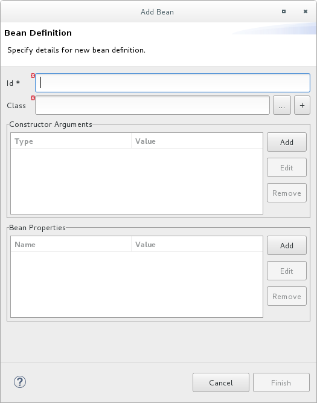
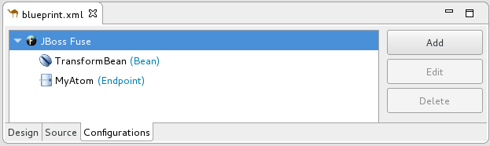
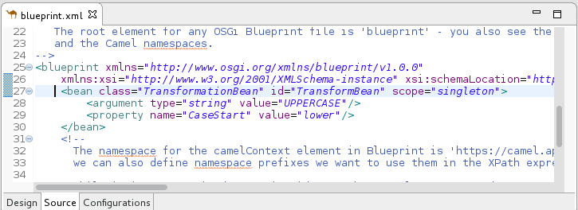
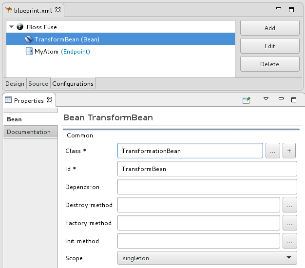

Some routes rely on shared configuration provided by global endpoints, global data formats, or global beans. You can add global elements to the project’s routing context file by using the route editor’s Configurations tab.
To add global elements to your routing context file:
- Open your routing context file in the route editor.
At the bottom of the route editor, click the Configurations tab to display global configurations, if there are any.

Click Add to open the Create a new global element dialog.

The options are:
- Endpoint — see Adding a global endpoint.
- Data Format — see Adding a global data format.
- Bean — see Adding a global bean.
In the Create a new global element dialog, select Endpoint and click OK to open the Select component dialog.

![[Note]](imagesdb/note.png)
Note By default, the Select component dialog opens with the Show only palette components option enabled. To see all available components, uncheck this option.
Note The Grouped by categories option groups components by type.

In the Select component dialog, scroll through the list of Camel components to find and select the component you want to add to the context file, and then enter an ID for it in the Id field.

In this example, the JMS component is selected and
myJMSis the Id value.Click Finish.

You can now set properties in the Properties view as needed.
The tooling autofills Id with the value you entered in the component’s
Idfield in [globalEndptSelect]. In this example, Camel builds theuri(required field) starting with the component’s schema (in this case,jms:), but you must specify the destinationName and the destinationType to complete the component’s uri.Note For the JMS component, the destination type defaults to
queue. This default value does not appear in theurifield on the Details page until you have entered a value in Destination Name (required field).- To complete the component’s uri, click Advanced.
In the Destination Name field, enter the name of the destination endpoint (for example,
FOO.BAR). In the Destination Type field, enter the endpoint destination’s type (for example,queue,topic,temp:queue, ortemp:topic).
The Properties view’s Details and Advanced tabs provide access to all properties available for configuring a particular component.
Click the Consumer (advanced) tab.

Enable the properties Eager Loading Of Properties and Expose Listener Session.
In the route editor, switch to the Source tab to see the code that the tooling added to the context file (in this example, a configured JMS endpoint), before the first route element.

- When done, save your changes by selecting File → Save on the menu bar.
In the Create a new global element dialog, select Data Format and click OK to open the Create a global Data Format dialog.

The data format defaults to
avro, the format at the top of the list of those available.- Open the Data Format drop-down menu, and select the
format you want, for example,
xmljson. In the Id field, enter a name for the format, for example, myDataFormat).

Click Finish.

In the Properties view, set property values as appropriate for your project, for example:

In the route editor, click the Source tab to see the code that the tooling added to the context file. In this example, a configured xmljson data format is before the first route element.

- When done, save your changes by selecting File → Save on the menu bar.
A global bean enables out-of-route bean definitions that can be referenced from anywhere in the route. When you copy a Bean component from the palette to the route, you can find defined global beans in the Properties view’s Ref dropdown. Select the global bean that you want the Bean component to reference.
To add a global bean element:
In the Create a new global element window, select Bean and click OK to open the Bean Definition dialog.
- In the Id field, enter an ID for the global bean, for example, TransformBean. The ID must be unique in the configuration.
Identify a bean class or a factory bean.
To specify a factory bean, you must have already added another global bean with a factory class specified. You can then select that global bean to declare it as a global bean factory. One instance of the bean factory class will be in the runtime. Other global beans can call factory methods on that class to create their own instances of other classes.
To fill the Class field, do one of the following:
- Enter the name of a class that is in the project or in a referenced project.
- Click … to navigate to and select a class that is in the project or in a referenced project.
- Click + to define a new bean class and add it as a global bean.
If the bean you are adding requires one or more arguments, in the Constructor Arguments section, for each argument:
- Click Add.
- Optionally, in the Type field, enter the type
of the argument. The default is
java.lang.String. - In the Value field, enter the value of the argument.
- Click OK.
Optionally specify one or more properties that are accessible to the global bean. In the Bean Properties section, do the following for each property:
- Click Add.
- In the Name field, enter the name of the property.
- In the Value field, enter the value of the property.
- Click OK.
Click Finish to add the global bean to the configuration. The global bean ID you specified appears in the Configurations tab, for example:
Switch to the Source tab to see the
beanelement that the tooling added to the context file. For example:Click the Configurations tab to return to the list of global elements and select a global bean to display its standard properties in the Properties view, for example:
Note To view or edit a property that you specified when you added a global bean, select the bean in the Configurations tab and then click Edit.
Set global bean properties as needed:
- Depends-on is a string that you can use to identify a bean that must be
created before this global bean. Specify the ID (name) of the depended
on bean. For example, if you are adding the
TransformBeanand you set Depends-on toChangeCaseBeanthenChangeCaseBeanmust be created and thenTransformBeancan be created. When the beans are being destroyed thenTransformBeanis destroyed first. - Factory-method is useful only when the global bean is a factory class. In this situation, specify or select a static factory method to be called when the bean is referenced.
- Scope is
singletonorprototype. The default,singleton, indicates that Camel uses the same instance of the bean each time the bean is called. Specifyprototypewhen you want Camel to create a new instance of the bean each time the bean is called. - Init-method lets you specify or select which of the bean’s
init()methods to call when the bean is referenced. - Destroy-method lets you specify or select which of the bean’s destory methods to call when the processing performed by the bean is done.
- Depends-on is a string that you can use to identify a bean that must be
created before this global bean. Specify the ID (name) of the depended
on bean. For example, if you are adding the
- When done, save your changes by selecting File → Save on the menu bar.
The procedure is the same whether removing an endpoint, data format or bean that was previously added to the routing context.
| Note |
|---|---|
You cannot perform an undo operation for deletion of a global element. If you inadvertently delete a global element that you want to keep in the configuration you might be able to undo the deletion by closing the context file without saving it. If this is not feasible then re-add the inadvertently deleted global element. |
In the Configurations tab, select the global element that you want to delete.
For example, suppose you want to delete the data format
myDataFormatthat was added in Adding a global data format:
Click Delete.
The global element
myDataFormatdisappears from the Configurations tab.Switch to the Source tab to check that the tooling removed the XML code from the routing context.

- When done, save your changes by selecting File → Save on the menu bar.
The procedure is the same whether modifying the properties of an endpoint, data format or bean that you added to the routing context.
Typically, you do not want to change the ID of a global element. If the global element is already in use in a running route, changing the ID can break references to the global element.
In the Configurations tab, select the global element that you want to edit.
For example, to edit the endpoint
myJMSthat was added in Adding a global endpoint, select it:
Click Edit.

In the Properties view, modify the element’s properties as needed.
For example, open the Advanced → Consumer tab, and change the value of Concurrent Consumers to
2:
In the route editor, click the Source tab and check that the tooling added the property
concurrentConsumers=2to the routing context:
- When done, save your changes by selecting File → Save on the menu bar.